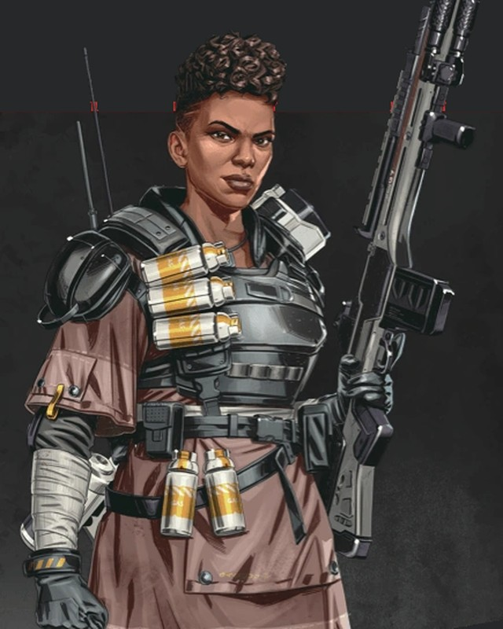

2730
The first Apex Games competitors begin competing
Renee Blasey, Makoa Gibraltar, Anita Williams, Ajay Che and Alexander Nox all start competing.

Soldier from Gridiron who entered the Apex Games in 2730 while searching for her missing brother Jackson. Her search ends in Season 13 when she discovers he has been living under a new identity in Harris Valley.
Renee Blasey, Makoa Gibraltar, Anita Williams, Ajay Che and Alexander Nox all start competing.
After Forgotten Families members kill Newcastle, Jackson Williams takes his place. Bangalore discovers during her supposed final match that her replacement is her brother.